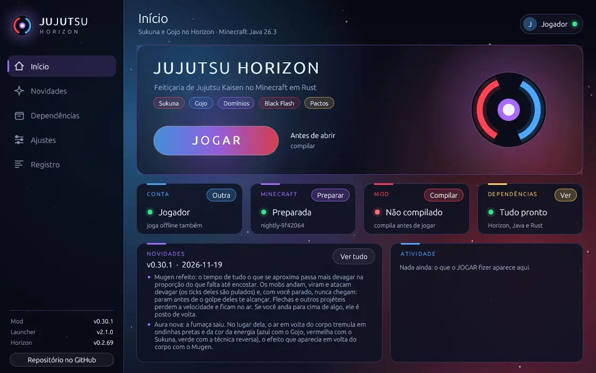

Feitiçaria de Jujutsu Kaisen no Horizon, o Minecraft Java 26.3 reescrito em Rust. Jogue de Sukuna ou de Gojo, com domínios, técnicas, pactos e Black Flash.
BAIXAR O LAUNCHER
Desmantelar, Cleave, Flecha de fogo e o Santuário Malevolente, com destruição de blocos.
Azul, Vermelho, Roxo, o Mugen que faz o tempo parar perto de você e o Vazio Ilimitado.
Socos carregados, combos, defesa e o Black Flash: M1 e M2 juntos no instante do impacto.
Expansões de domínio que prendem os mobs em volta, cada uma com o seu efeito.
Abra mão de uma técnica ou de vida em troca de mais dano, por um tempo.
Níveis, árvore de habilidades por personagem, técnica reversa e barra de energia.
Baixe o jujutsu-launcher.exe e abra. Não precisa instalar nada antes.
Uma vez só, com a conta Microsoft que tem o Minecraft: Java Edition. Depois disso, o jogo abre mesmo sem internet.
O launcher baixa o que falta (o launcher oficial do Horizon 0.2.108, o Horizon Nightly, o Java, o Rust e o próprio mod), prepara a 26.3, compila e abre o jogo.
Get-FileHash .\jujutsu-launcher.exe).O launcher confere o mod no GitHub sempre que abre. Quando sai uma versão nova, o Jogar pede ao Horizon para atualizar o mod (mods update-github) e compila antes de abrir. As novidades de cada versão aparecem no próprio launcher.
Só singleplayer por enquanto.